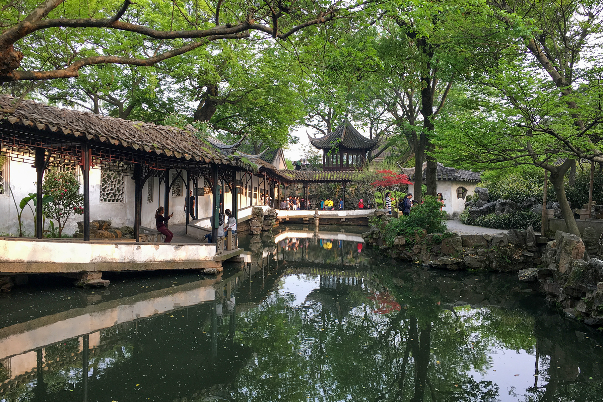
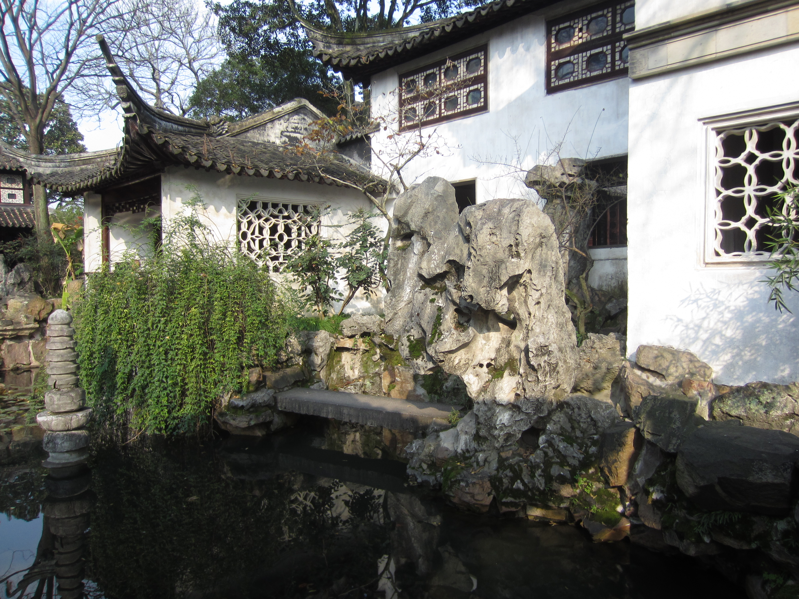
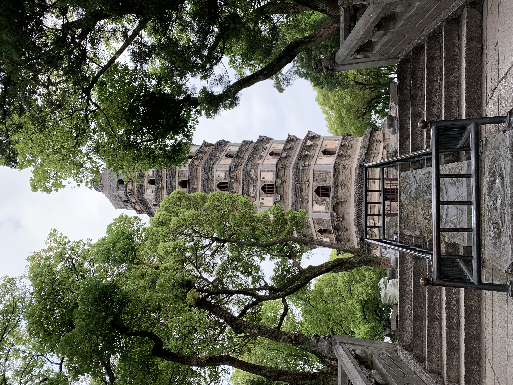
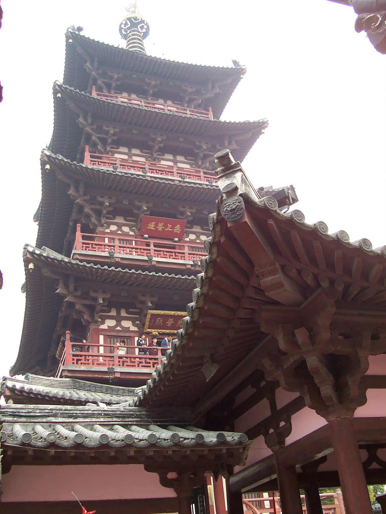
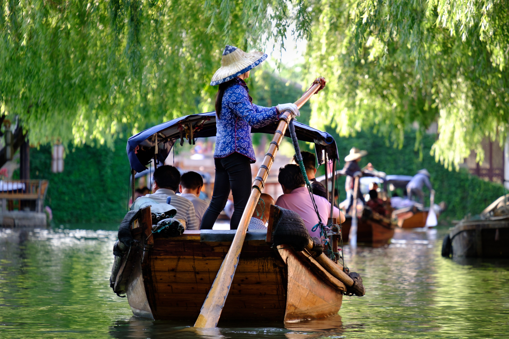
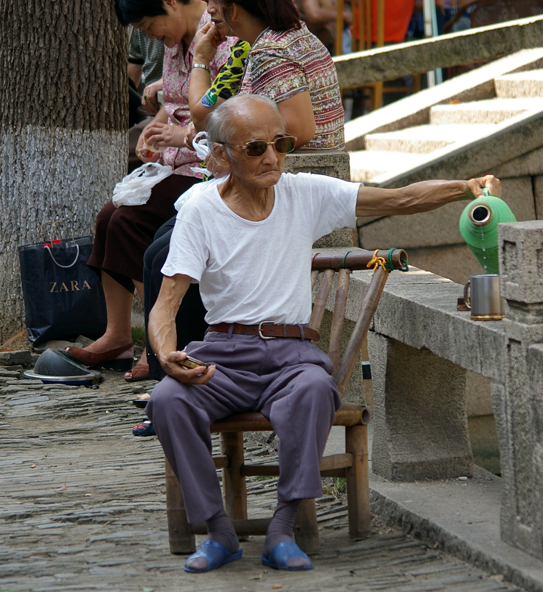
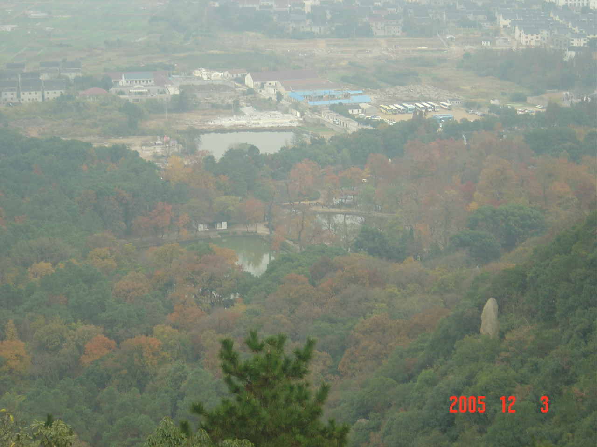
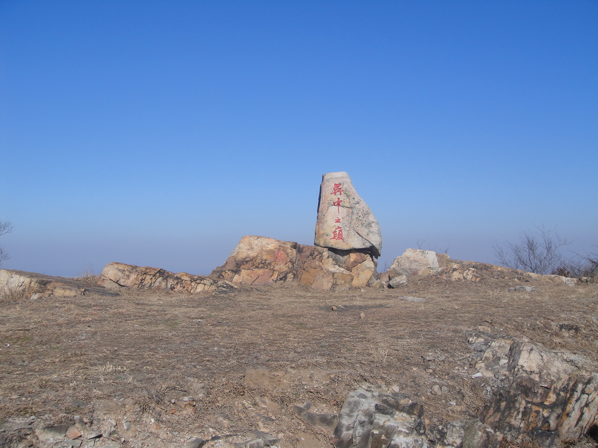

苏州不只是园林城市。古城内外有拙政园、留园、虎丘、寒山寺，往南可去周庄、同里；西郊则是天平、灵岩、穹窿、上方、阳山一线的丘陵。下面按「经典景区 / 周边名山 / 徒步路线 / 安全」四块整理一份自用备忘，门票与开放时间以景区当日公示为准。
一、经典景区
拙政园
苏州最大的古典园林，也是江南园林的代表。以水为中心，远香堂、小飞虹、枇杷园一带移步换景。春花、夏荷、秋叶、冬梅都能看，建议预留 2–3 小时，旺季尽量早点进园。

留园
以建筑空间的开合变化见长，廊、厅、石、院层层套叠。园中冠云峰是太湖石名品。体量小于拙政园，认真走完大约 1.5–2 小时，适合和拙政园错开同一天的节奏。

虎丘
「到苏州不游虎丘，乃憾事也。」山不高，但云岩寺塔（虎丘斜塔）、剑池、千人石都是吴地标志。从山门到塔院有连续台阶，算一次轻松的景区徒步，约 1.5–2.5 小时。

寒山寺
因张继《枫桥夜泊》闻名。寺院本身不大，和枫桥、铁铃关连看大约 1 小时。夜半听钟多是旅游项目，白天更适合看殿宇和普明宝塔。

周庄 / 同里
周庄水巷更完整，双桥、沈厅是招牌，坐船看柳与乌篷船最有画面感，建议半天到一天。同里相对安静，退思园值得细看，街巷生活气息更重，也适合半天到一天。节假日两镇都容易拥挤，工作日体验更好。


二、周边名山
天平山
海拔约 201 米，红枫、怪石、清泉并称三绝，秋季是苏州最稳的赏枫点。一线天、白云泉、范仲淹相关遗迹都在景区内。登顶轻松，适合入门。

灵岩山
海拔约 182 米，紧邻木渎。灵岩寺、吴王井、西施相关传说是主线，石板步道规整，大约 1–2 小时可登顶。常作为周末爬山或「灵岩—天平」联走的起点。
穹窿山
主峰约 341.7 米，苏州最高峰。孙武苑、上真观、大茅峰（吴中之巅）是常见打卡。景区内有公路和步道，也可走登山道登顶；晴天可远眺太湖方向。

上方山
海拔约 90 余米，依附石湖景区，坡度缓，楞伽寺、石佛、环湖步道适合亲子和半日休闲。春季花景较多，爬山本身负担很小。
阳山
主峰箭阙峰海拔约 338.2 米，苏州第二高峰，现多指大阳山国家森林公园一带。桃花、碑材、山林步道是记忆点；土石路偏多、局部偏陡，人比天平、灵岩少，更像一次正经登顶。
三、徒步路线（难度 / 时间）
灵岩山主线
景区入口 → 灵岩寺 → 山顶观景 → 原路或环线下山。台阶完善，适合入门和家庭。早晨或傍晚人少，下山后可接木渎古镇。
天平山 · 卓笔峰
天平山景区 → 半山亭 → 山顶 / 卓笔峰 → 白云泉下山。秋季红枫节人很多，尽量避开周末正午。一线天路段注意脚下。
上方山 · 石湖
森林公园 / 石湖一侧进 → 楞伽寺、石佛 → 林间步道，可加一段环湖。爬升很小，更像郊游。春季花期和秋季桂花都合适。
穹窿山登顶
孙武苑 / 景区步道 → 主峰登山道 → 大茅峰「吴中之巅」→ 环线或原路。山路比灵岩陡，夏季闷热，春秋最合适。部分路段以景区开放为准。
阳山（箭阙峰）
大阳山森林公园步道登顶。土石混合、局部坡度明显，游客较少。新手不建议雨天单独走；晴天视野可看高新区一带。
灵岩—天平联走
灵岩山 → 山脊方向 → 天平山下山。苏州西郊最常见的半日线。部分连接段是山路而非景区台阶，需要看标记、带够水。
灵白线（灵岩 → 白马涧）
灵岩山 → 天平山 → 观音山方向 → 白马涧。串联几座西郊山，体力消耗明显，适合有徒步经验、结伴、清晨出发。不要按景区观光的节奏去估时。
四、安全提示
出门前先看天气和体力
- 苏州丘陵不高，但夏季湿热、雨后石板和土路都滑。不走未标记野路，不在暴雨、雷电天硬闯山脊。
- 中等及以上路线至少两人同行，报备大致下山时间；手机电量和饮用水按每人 1–2 升准备。
- 穿防滑鞋，红枫季和节假日人流大，一线天、台阶处避免拥挤推挤。
- 山区局部信号不稳。遇伤病或迷路，优先下撤到有路、有人处，紧急情况拨打 110 / 120 并说清所在山名和最近入口。
- 园林和水乡是观光，山路是徒步：不要把穹窿、阳山、灵白线当成「随便走走」。
怎么排行程
- 半天园林：拙政园或留园二选一，再加虎丘或寒山寺。
- 一天水乡：周庄、同里只去一座，比两座连赶更舒服。
- 入门爬山：灵岩或天平；秋季优先天平。
- 想登顶：穹窿山或阳山，预留半天以上。
- 想走透：灵岩—天平联走，或完整灵白线。
图片来自 Wikimedia Commons，授权分别为 CC BY / CC BY-SA。作者：Windmemories、Another Believer、Chainwit.、螺钉、Kristoffer Trolle、Jakub Hałun、Makecat。